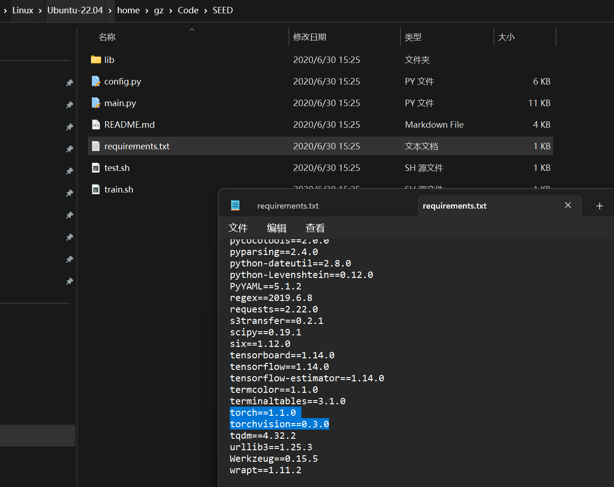

Paper-SEED-Semantics Enhanced Encoder-Decoder Framework for Scene Text Recognition
@全体成员 所有一二年级的同学先读一下这篇论文。咱们本周三组会时请每位同学翻译一段，然后分析一下论文写作的特点。该论文是2020年CVPR会议论文，本年度的CVPR截稿日期为6月20日，是CCF推荐会议，希望各位同学关注会议网站，有准备的同学可以投稿。
翻译
Abstract
场景文本识别是个研究热点，最近识别模型都是基于 E-D 的框架，可以处理视角失真（perspective distortion）和曲线形状（curve shape）。但它们对模糊（blur）、不均匀的照明（uneven illumination）、不完整的文字（incomplete characters）不好使。我们认为它们不好使的原因是这些 E-D 方法都是基于局部视觉特征（local visual features）没有用显式的语义信息（explicit global semantic information）。我们提出了一个语义增强的 E-D 框架来鲁棒地识别低质量的场景文本。语义信息（semantic information）在 E 中被用在监督，在 D 中被用于初始化。特别地，当前的 SOTA（state-of-the-art）ASTER算法 也被用在我们所提出的框架中。大量的实验表明，我们这个模型对低质量图像具有鲁棒性。在几个基准数据集上获得 SOTA。代码即将可用。
1 Introduction
- convincing performance（令人信服的性能）
- conventional（传统的）
- promising results（可喜的结果）
- background interfere（背景干扰）
- occlusion（遮挡）
regular（常规）
each time step（间距）
- For irregular（不规律的）based text recognition, the rectification（校正）based methods
Rectification based methods first rectify the irregular images, then the following pipeline（管道）is as those of regular recognition（规则识别）
multi-direction encoding（多向 E）使用带两个 LSTMs 的 CNN 给四个方向编码
- 2D-attention 使用 2D-attention 机制处理不规则文本，直接处理二维的 feature map
如果只把文字识别单纯视作是一个字符分类任务，忽略全局语义，那么对低质量图像识别出来会是依托答辩。
语义信息（semantic information）有两个优点：
在 NLP 中可以用 一个词嵌入（a word embedding）来进行监督（supervised）
gap（差距）
cross-modality task（跨模态任务）
concepts（观念）
weighted ranking loss（加权排名损失）
我们这个模型会预测语义信息，并通过来自预训练的语言模型的单词嵌入来监督。
- integrate（集成）
2 Related Work
2.1 Scene Text Recognition
传统方法 adopt（采用）a bottom-up approach（方法），先检测和分类字符，然后使用启发式规则（heuristic rules）、语言模型（language models）或词典（lexicons）。整了一堆手工提取的计算成本高（computationally expensive）特征用于 SVM，如纵横比（aspect ratio）、孔面积比（hole area ratio）
HOG descriptors（HOG 描述符）
- Hough voting（Hough 投票机制）
treats（视作）
character alignment（字符调整）
contextual dependencies（上下文相关性）
attention drift（注意力漂移）
上述方法都假定（assume）文本是水平（horizontal）的，带透视扭曲和曲线就寄。提出了 STN 解决这个问题，还可以用迭代矫正（iterative rectification）和几何约束（geometric constraints）矫正（rectifies），矫正（rectifying）
in spite of（尽管）
auxiliary dense character（辅助稠密特征）
tailored（特制的）
2.2 Semantics in Scene Text
contextualized lexicons（语境化词典）
word spotting system（单词识别系统）
- boost（促进）
- utilize（应用）
- integrate（合并）
- explicitly（准确地）
3 Method
3.1 Encoder-Decoder Framework
simplicity（简单地）
fixed（固定）
- drawback（缺点）
- inspired（启发）
- shortcuts（捷径）
- capable（能干的）
3.2 FastText Model
设 $T=\{w_{i-l},…,w_{i+l}\}$ 是文本语料库中的一个句子。
- $l$ 是句子的长度，是一个超参数
单词 $w_i$ 由嵌入向量 $v_i$ 表示，然后输入到简单的前馈神经网络（simple feed-forward neural network）
目的是预测表示为 $C_i=w_{i−l},…,w_{i−1},w_{i+1},…,w_{i + l}$。通过前馈网络的训练，同时对嵌入向量进行优化，最终得到的单词嵌入向量与语义相近的单词接近
- FastText 还嵌入了子单词（subwords），使用它们生成单词 $w_i$ 的最终嵌入。
3.3 SEED
3.3.1 General Framework
scenarios（情景）
address these problems（解决这些问题）
utilizing（使用）
alternative（可替代的）
- fed into（馈送）
3.3.2 Architecture of Semantics Enhanced ASTER
- exemplar（模板）
- transcribes（转录）
thin-plate splines（薄板样条）
rectified image（矫正图像）
编码器的输出是形状为 $L\times C$ 的特征序列 $h=(h_1,…h_L)$，$L$ 是 CNN 中最后一个特征图的宽度，$C$ 是深度。
特征序列 $h$ 有两个功能：
- 通过语义模块预测语义信息
- 作为 D 的输入
将特征序列平坦化为一维向量 $I$，维数为 $K$，$K=L\times C$，语义信息 $S$ 通过两个线性函数预测 $S=W_2\sigma(W_1I+b_1)+b_2$
In particular, the semantic information S is used to initialize the states of GRU after a linear function for transforming the dimension.
- 特别地，使用语义信息 $S$ 对 GRU 的状态进行初始化，并对维度进行线性函数变换。
Instead of using zero-state initializing, the decoding process will be guided with global semantics, so the decoder uses not only local visual information but also global semantic information to generate more accurate results.
- 解码过程将以全局语义为指导，而不是使用零状态初始化，因此解码器不仅使用局部视觉信息，还使用全局语义信息来生成更准确的结果。
3.4 Loss Function and Training Strategy
- $L_{rec}$ 是预测概率相对于 GT 的 standard cross-entropy
- $L_{sem}$ 是预测的语义信息和从预训练 FastText 模型中转录标签词嵌入和预测语义信息的余弦嵌入损失.
- two training strategie（策略）
- 用预训练的 FastText 模型中的词嵌入而不是预测的语义信息初始化 D
- 直接预测语义信息
4 Experiments
4.1 Datasets
- implementation details（实现细节）
benchmarks（基准）
cropped（裁切不正的）
careful capture（小心捕捉）
resolution（分辨率）
synthetic（合成）
- It contains words from the testing set of the IC13 and SVT. 它包含来自 IC13 和 SVT 测试集的单词
4.2 Implementation Details
officially（正式地）
symbols（符号）
采用 ADADELTA 最小化目标函数
文本生成任务中常用的解码策略Beam Search（集束搜索）
accumulative scores（累积计分）
4.3 Ablation Study
separately（分开）
consistently（一贯地）
predicted holistic features（预测整体特征）
implicit weakly supervised（隐式弱监督）
4.4 Performance with Inaccurate Bounding Boxes
real applications（真正的应用程序）
If text recognition is robust to inaccurate detection results, the overall end-to-end performance can be more satisfactory
- 如果文本识别对不准确的检测结果具有鲁棒性，则整体端到端性能可以更令人满意
receptive field（接受域）
conduct experiments（进行实验）
situation（情况）
exemplar（样本）
shrink datasets（小数据集）
simultaneously（同时地）
intersection over union（交集/并集）
4.5 Generalization of Proposed Framework
generalization（泛化性）
ntegrate another state-of-the-art recognition method SAR
- 集成了另一种 SOTA：SAR
4.6 Qualitative Results and Visualization
- occlusion（遮挡）
代码
从 Pay20Y/SEED (github.com) 下载代码到系统上，把 requirement.txt 里关于 torch 的删了。

装！
|
中间会因为装 pycocotools 失败而寄，填之：
|
继续，然后装 scipy 会寄，从 requirement.txt 里删了它重新装直到没有报错。
从 Word vectors for 157 languages · fastText 里下载下载预训练语言模型 cc.en.300.bin：